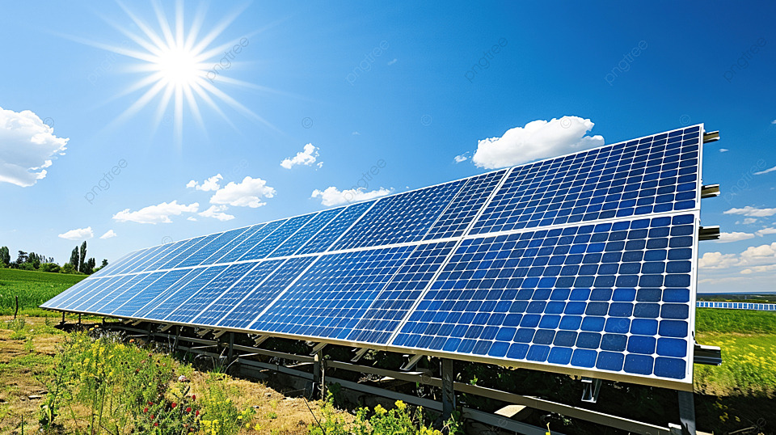
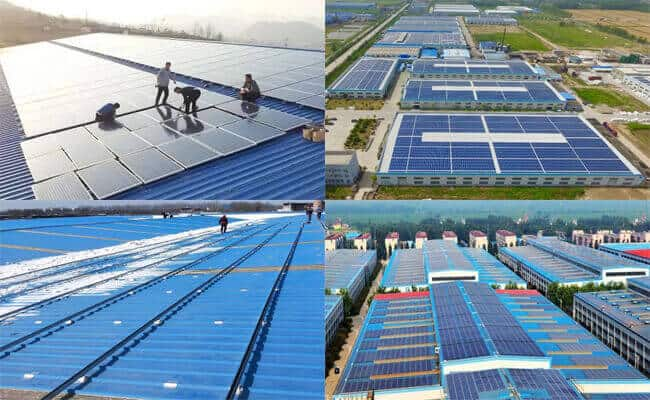

Nous sommes votre partenaire de confiance pour des solutions solaires durables. Découvrez comment nous pouvons vous aider à économiser sur les coûts énergétiques tout en contribuant à un avenir plus vert.

L'énergie solaire est une ressource durable et inépuisable, capable de transformer la lumière du soleil en électricité grâce aux panneaux photovoltaïques. Cette technologie propre et silencieuse offre de nombreux avantages, notamment la réduction des coûts énergétiques et de l'empreinte carbone, tout en préservant la planète pour les générations futures.
Agadir Solar s'engage à fournir des solutions solaires sur mesure pour les particuliers, entreprises et institutions. Grâce à une expertise locale et des technologies de pointe, nous aidons nos clients à exploiter pleinement le potentiel solaire de la région. De l'installation de systèmes photovoltaïques à la maintenance des équipements, nous offrons un service complet. En choisissant l’énergie solaire, nous participons ensemble à la réduction des émissions de CO₂ et à la lutte contre le réchauffement climatique, tout en bénéficiant des économies liées à l’autoproduction d’énergie propre. 🌞
Nos Services
Chez Agadir Solar, nous proposons une gamme complète de services en énergie solaire pour les foyers et les entreprises, y compris l'installation, la maintenance et le conseil en énergie solaire.
- Installation de panneaux solaires: Installation professionnelle et efficace pour des économies d'énergie immédiates.
- Maintenance et suivi: Services de maintenance pour garantir la performance optimale de vos panneaux solaires.
- Consultation en énergie solaire: Experts disponibles pour des conseils personnalisés sur la transition vers l’énergie solaire.
Chez Agadir Solar, nous nous engageons pour un avenir durable grâce à l’installation et la maintenance de panneaux solaires. Nous analysons vos besoins énergétiques, l’espace disponible, l’orientation et l’exposition solaire pour optimiser le rendement. Une fois le plan validé, nos techniciens certifiés procèdent à une installation sécurisée et fiable, suivie d’un contrôle qualité rigoureux.
La maintenance est essentielle pour garantir des performances durables. Elle inclut le nettoyage des panneaux, la vérification des connexions et l’inspection des composants. Avec des outils avancés, nous surveillons les performances pour détecter et résoudre rapidement les anomalies.
Avec plus de 5000 installations réussies et un taux de satisfaction de 95%, Agadir Solar vous accompagne avec des solutions sur mesure et un service après-vente de qualité.
Pourquoi choisir Agadir Solar ?
Avec Agadir Solar, vous bénéficiez d'une expertise locale, d'un service client exceptionnel et de solutions sur mesure pour répondre à vos besoins en énergie solaire.
- Expérience: Des années d'expérience dans l'industrie solaire.
- Fiabilité: Un service de qualité et des installations durables.
- Satisfaction client: Nous plaçons nos clients au cœur de notre mission.
Agadir Solar est un leader de l’énergie solaire, avec plus de 10 ans d’expérience dans la conception, l’installation et la maintenance de systèmes solaires. Nous avons installé plus de 5000 panneaux solaires, réduisant la consommation d’énergies fossiles et les émissions de CO2. Nos équipements de haute qualité garantissent une durée de vie moyenne de 25 ans, avec un taux de satisfaction client de 95%.
Nous offrons des solutions sur mesure adaptées à chaque projet, plaçant la satisfaction client au cœur de notre mission. En plus des installations, nos services de maintenance préventive et de suivi assurent des performances optimales à long terme.
Engagés pour un avenir vert, nous intégrons les dernières technologies solaires pour maximiser l’efficacité énergétique. Avec Agadir Solar, vous bénéficiez d’une expertise locale, d’une équipe qualifiée et d’un service après-vente réactif pour répondre à tous vos besoins.
Nos Projets Réalisés
Explorez quelques-uns des projets que nous avons réalisés pour des clients satisfaits à travers Agadir et les environs.

Chez Agadir Solar, nous excellons dans l'innovation et la réalisation de projets solaires sur mesure. De l’installation résidentielle aux solutions à grande échelle, nous collaborons avec divers secteurs comme l’hôtellerie, l’industrie, et le commerce. Nos projets visent à maximiser l’efficacité énergétique tout en réduisant l’empreinte carbone.
Chaque solution est adaptée aux besoins spécifiques des clients, intégrant esthétique, durabilité et rentabilité.
Grâce à une maintenance proactive, nos installations maintiennent leur performance sur le long terme. Parmi nos réussites, nous avons équipé un complexe hôtelier de luxe, réduisant ses coûts énergétiques de 30 %, et un centre commercial avec bornes de recharge électrique, confirmant notre engagement pour un avenir durable.
Nous Contacter
Pour plus d'informations sur nos services, ou pour obtenir un devis personnalisé, n'hésitez pas à nous contacter. Ensemble, créons un avenir plus propre et plus lumineux !
Chez Agadir Solar, notre équipe est à votre disposition pour répondre à toutes vos questions et vous accompagner dans vos projets d'énergie solaire. Que vous soyez un particulier cherchant à installer des panneaux solaires sur votre toit ou une entreprise souhaitant investir dans une solution énergétique durable à grande échelle, nous sommes là pour vous guider. Nos experts vous fourniront des conseils personnalisés et vous aideront à choisir la meilleure option en fonction de vos besoins spécifiques et de votre budget.
Nous vous offrons également un service après-vente réactif et une maintenance proactive pour garantir le bon fonctionnement de vos installations sur le long terme. Pour toute demande de devis, d’informations complémentaires ou pour discuter de votre projet, n’hésitez pas à nous contacter. Vous pouvez nous joindre par téléphone, email, ou via notre site web. Nous nous engageons à vous répondre dans les plus brefs délais et à vous fournir un service de qualité. Ensemble, construisons un avenir énergétique plus vert et plus responsable.